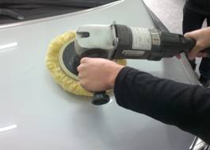
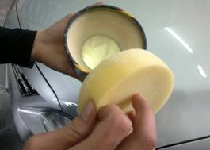
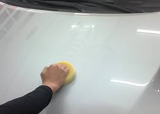
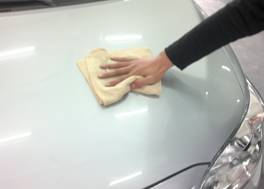
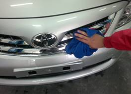

当前位置：首页 > 实训项目与考核 > 实训项目清单
项目流程
表5 手工打蜡流程
| 环节 | 项目 | 具体程序 | 操作目的及 注意事项 | 作业示意图 |
|---|---|---|---|---|
| 1 | 清洗 | 1）用强力清洗剂清洗车身。 | 注意事项： 1）待车身完全干燥后才能进行上蜡。 |
|
| 2 | 研磨与抛光 | 1）按研磨抛光的施工流程清除车漆表面的划痕、氧化层等缺陷。 2）冲洗干净 |
注意事项： 1)研磨抛光流程的注意事项。 |
 |
| 3 | 上蜡 | 1）用打蜡海绵沾适量车蜡，以画小圆圈的方式旋转均匀涂蜡，圆圈大小以无遗漏漆面为准，每圈盖住前一圈的1/3。 2）圆圈轨迹沿车身方向作直线运动。 |
注意事项： 1）打蜡应在室内进行。 2）全车上蜡应一次完成，不可时涂时停。 3）橡胶保险杠、车身饰条、车窗防雨密封条等橡胶件、朔料件不能上蜡。 4）不能在阳光下或车身温度过高时打蜡。 |
  |
| 4 | 抛蜡 | 1）上蜡后等待5-10min，当车蜡在车漆表面开始发白。 2）用柔软、干燥的毛巾沿直线方向擦拭，直至整个车表没有残蜡。 |
注意事项： 1）不得按圆圈轨迹抛蜡，抛蜡必须沿直线方向，且横竖线交替进行，最后一道应按雨水流动的方向抛蜡。 |
 |
| 5 | 清理 | 1）打蜡作业完成后，清除车灯、车牌、车门和后备箱等处缝隙中的残留车蜡。 | 注意事项： 1）仔细检查，彻底清除残蜡。 |
 |
上一页 1 2 3 4 5 6 7 8 下一页